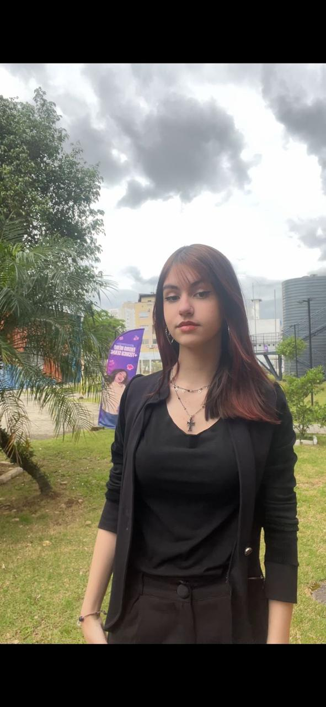
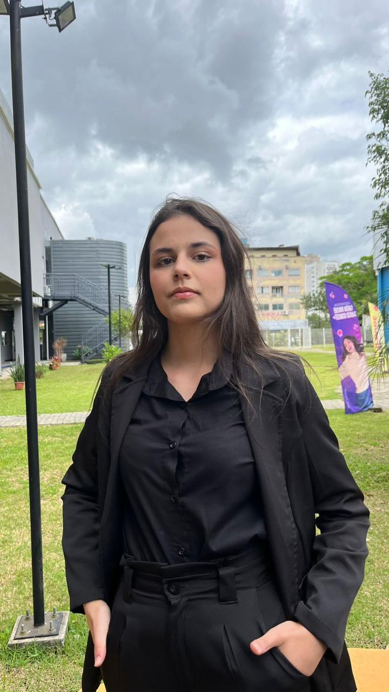
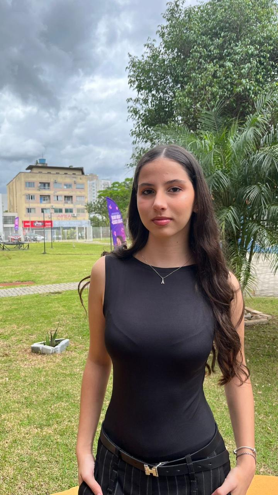

História
Livro IV · A equipe Peak
A equipe Peak
Por que a Peak existe
A Peak nasceu como projeto final de escola, criada por um grupo que gosta de RPG e queria um lugar simples para criar fichas, reunir o grupo e jogar.
O site reúne tudo o que uma mesa de RPG precisa: fichas, campanhas, mapa com música, monstros, uma comunidade para encontrar jogadores e livros que explicam o jogo.
A Peak também quer dar destaque a artistas e criar parcerias. Por isso, as artes e as campanhas de parceiros aparecem com os créditos de quem as fez.
Além do jogo, a Peak liga a aventura aos ODS da ONU: a campanha As Raízes do Fim trata da falta de água limpa e é ligada à ODS 6, água potável e saneamento.
Quem somos



Criadores e artistas
A Peak foi feita com a ajuda de pessoas que emprestaram o seu trabalho para o projeto: histórias, desenhos, a logo e os banners. Cada uma aparece aqui com o crédito do que fez.
Campanhas
A logo da Peak
Artes e banners
As artes usadas nas capas, nos monstros, nos retratos e nos eventos pertencem aos seus artistas. Sempre que possível, o crédito aparece junto da arte.
Quer ser parceiro? Na Comunidade, marque "Sou ilustrador" ou "Sou escritor" nas suas parcerias: quem procura vai encontrar você.
Obrigada a…
PROFESSORESProfessor Ramon e Jailson
TURMAInfo 1
SENACAgradecemos a equipe Senac pela oportunidade.
ARTISTASArtistas donos das artes no site e nossos criadores de campanha oficiais, César e Vinicius
Dicionário
Mestre
Quem conduz a história: descreve o mundo, interpreta os monstros e decide o que acontece.
Ficha
A "folha" do personagem: raça, classe, vida, atributos, itens e história.
Campanha
A aventura inteira, do começo ao fim. É formada por várias sessões.
Sessão
Um encontro do grupo para jogar um pedaço da campanha.
Dado
Decide o que depende da sorte. "d20" é o dado de 20 lados.
Atributos
FOR, DES, CON, INT, SAB e CAR: no que o personagem é bom.
Raça
O povo do personagem: elfo, humano, goblin... Define a vida inicial.
Classe
A profissão de aventureiro: o que o personagem sabe fazer.
Monstro
Qualquer criatura que o grupo encontra pelo caminho.
Nível
Quanto o personagem já evoluiu. Sobe conforme ele vive aventuras.
ODS
Objetivos de Desenvolvimento Sustentável: 17 metas da ONU para o mundo até 2030.